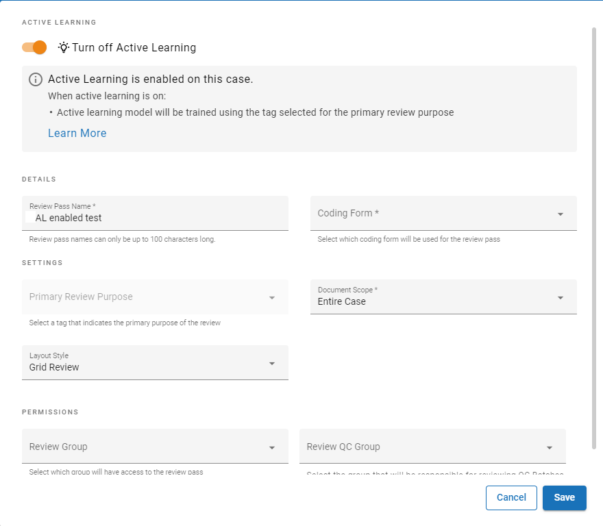
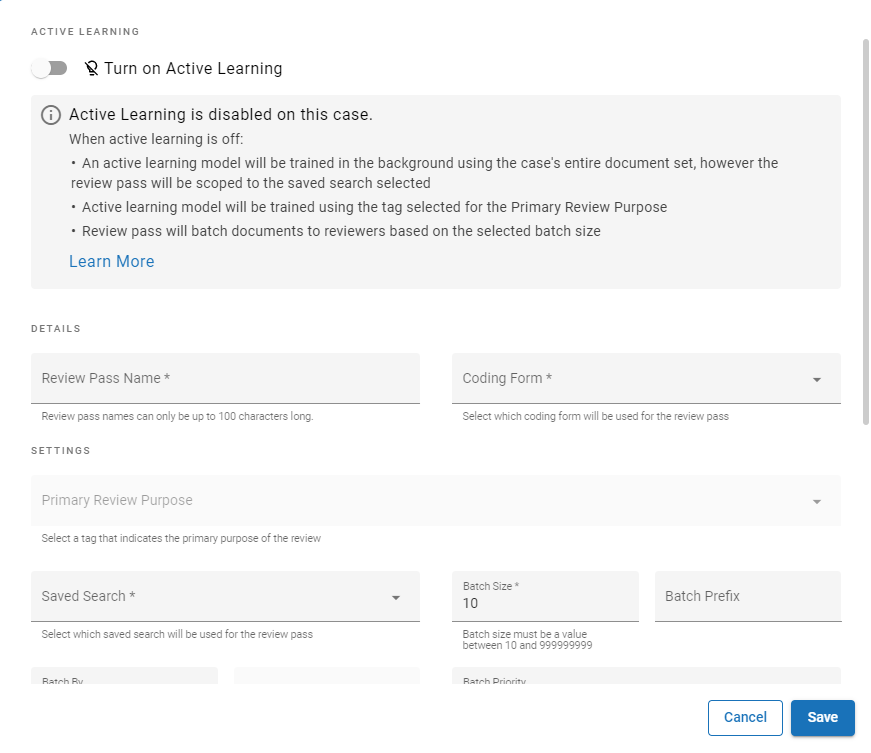
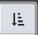
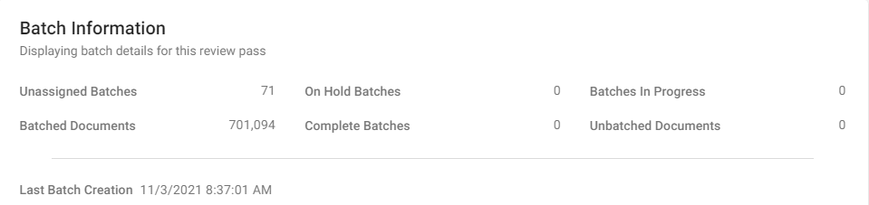

Note:
If you prefer to turn off the
Review passes are based on searches saved in
|
|
Note: If you prefer to turn off the |
You can create either an
Active learning is the ability to have documents prioritized through the use of algorithms with no direction from the user beyond the coding supplied when they review the documents. With
The “continuous” facet of
Review passes are designed for
To create an
In

Click the  button.
button.
The Visual Search Dashboard appears.
On the left panel, click the Review Pass Management button,  .
.
Click  .
.

Enter a name for the review pass and complete other required entries. Continue setting up the AL enabled review pass by using the definitions in the table Review Pass Definitions - AL Enabled.
The following tables describe the definitions shown on the Settings tab and the Overview tab.
Settings Tab (AL Enabled)
|
SETTINGS |
DESCRIPTION |
||
|---|---|---|---|
|
General |
|||
| Active Learning |
Switch on - enabled Switch off - disabled |
||
| Coding Form |
Coding form being used for the review pass.
|
||
| Primary Review Purpose |
Allows
Reviewers should use the On Hold review status when reviewing documents if they are unsure whether the document is a positive or negative example. This prevents the document from being added as an example until a review decision can be made.
|
||
|
Recall |
The estimate of the percentage of positive documents in the entire case. The desired recall for the review pass can be configured from 70% to 90% in increments of 10%. |
||
|
Batch Size |
The number of documents a reviewer will receive at a time |
||
|
Layout Style |
Determines the view when the review pass is opened |
||
|
Document Scope |
The scope of documents that Active Learning will use train documents. Select from:
|
||
|
Permissions |
|||
|
Group(s) |
Contains Groups assigned to the normal batches in the review pass |
||
|
Review QC Groups(s) |
Controls the QC batch permissions. Contains Groups assigned to the QC batches within the review pass.
If a Review QC Group is selected, users who are part of that group will always receive a QC Batch for the Review pass if one is available. If a QC Batch is not available and the user is part of the regular review group, they will receive a normal batch. |
||
Overview Tab (AL Enabled)
|
Sections |
DESCRIPTION |
|---|---|
| Review Metrics | Breakdown of selected tags in checked-in documents Precision is the percent likelihood that you will hit a positive document as you continue reviewing. For example, if you review 100 documents and 90 of them are positive, then the Precision is 90%. |
|
Review Progress |
Manually reviewed checked-in documents by date |
| Documents Manually Reviewed | Listing of manually reviewed documents |
|
Batch Information |
Batch details for the review pass |
To create a
Click .

Enter a name for the review pass and complete other required entries.
As required, complete optional entries.
Go to
After you have created the batches, continue setting up the AL disabled review pass as defined in the table : Review Pass Definitions - AL Disabled.
The following tables describe the definitions shown on the Settings tab and the Overview tab.
|
SETTINGS |
DESCRIPTION |
||
|---|---|---|---|
|
General |
|||
| Active Learning |
Switch on - enabled Switch off - disabled |
||
| Coding Form | Coding form being used for the review pass. | ||
|
Primary Review Purpose |
Allows
Reviewers should use the On Hold review status when reviewing documents if they are unsure whether the document is a positive or negative example. This prevents the document from being added as an example until a review decision can be made. |
||
|
Recall |
The estimate of the percentage of positive documents in the review pass. The desired recall for the review pass can be configured from 70% to 90% in increments of 10%. |
||
|
Saved Search |
Saved search of records to be included in the review pass. |
||
|
Batch Size |
The number of documents a reviewer will receive at a time. |
||
|
Batch Prefix |
The prefix added before each batch. |
||
|
Batch By |
Method for grouping documents within batches. Ensure None is selected if you prefer to organize batches in numerical order by image key. Otherwise, you can choose to batch documents either by field or by analytics categories. For example, you might group documents based on the File Type field, in which case all like documents (.MSG, .DOC, .XLS, etc.) will be grouped into batches based on batch size. |
||
|
Batch Priority |
The priority set for each batch. |
||
|
Family Field |
Ensures all documents with the same value in this field are kept together in batches. |
||
|
Layout Style |
Determines whether the reviewer can see only the Document Viewer (Form View) or both the Document Viewer and the Grid (Grid View). |
||
|
Batching Order |
Sort documents by the content of up to three fields. |
||
|
Permissions |
|||
|
Group(s) |
Contains Groups assigned to the normal batches in the review pass. |
||
|
Review QC Groups(s) |
Controls the QC batch permissions. Contains Groups assigned to the QC batches within the review pass.
If a Review QC Group is selected, users who are part of that group will always receive a QC Batch for the review pass if one is available. If a QC Batch is not available and the user is part of the regular review group, they will receive a normal batch. |
||
To create batches:
In the Review Pass Management panel, click the required review pass. If a large number of review passes exists, take any of the following actions to find the required one:
Scroll vertically to locate the review pass in the list.
Sort the keyword list names by clicking the sort button,

, and selecting from the different options. Click a selected option again to reverse the sort order.In the Search box , start typing any of the following items: the keyword list name, the name of the administrator who created/modified the group, or part of the created/modified date. This is a plain text search that searches these items in order.
Review the number of unbatched documents in the review pass, then click Create Batches.
Repeat the previous steps to create other review passes.
To batch unbatched documents for the selected review pass:
Click Update Documents and Create Batches. The following dialog box appears:
Click Continue. A message displays to let you know the updated batch is being built.
View the Batch Information section to see the updated batch status.

To re-batch unreviewed documents:
|
|
Note: The Re-Batch Unreviewed Docs button also re-batches On Hold Batches. |
Related Topics